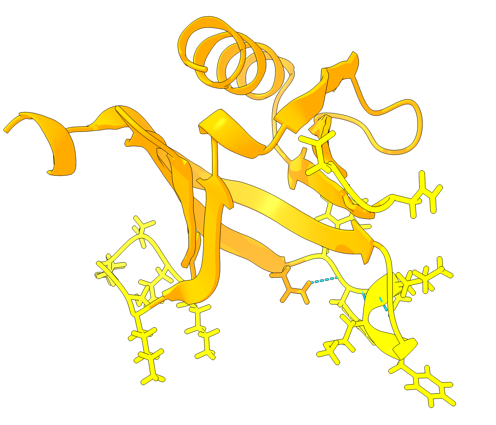

現在の状況
東大博士課程在籍
来日9年目
来日9年目
こんにちは、姚 品碩です。
タンパク質設計研究者
東京大学の博士課程学生で、AI支援タンパク質設計に焦点を当てています。私の研究は、タンパク質の機能を定義するアミノ酸コードを理解するための大規模タンパク質解析法の開発を含み、より効率的な人工タンパク質設計を目指しています。
学際的融合と技術革新が科学の進歩を推進すると信じています。
学際的融合と技術革新が科学の進歩を推進すると信じています。
